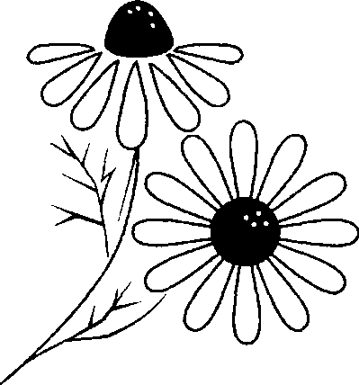
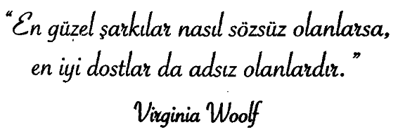

Bir insanın yaşamının en önemli kısmı, iyilik ve sevgi adına yaptığı küçük, adsız ve anımsanmayan eylemlerdir.
Ergenlik dönemindeydim ve babamla sirk bileti kuyruğunda bekliyorduk. Sonunda bilet gişesiyle aramızda tek bir aile kalmıştı. Bu aile beni çok etkiledi. Tümü de on iki yaşın altında tam sekiz çocukları vardı. Çok varlıklı olmadıkları her hallerinden belliydi. Üzerlerindeki giysiler pahalı şeyler değildi ama tertemizdi. Çocukların tümü babalarının arkasında ikişerli sıra olmuş, el ele ve terbiyeli terbiyeli sıranın kendilerine gelmesini bekliyorlardı. Neşe içinde palyaçolar, filler ve o gece görecekleri değişik şeyler hakkında konuşuyorlardı. Daha önce sirke gitmedikleri konuşmalarından belliydi.
O gece hiç kuşkusuz yaşamlarının çok önemli bir gecesi olacaktı. Anneyle baba gururla çocukların önünde duruyorlardı, el ele tutuşmuşlardı.
Gişedeki memur, babaya kaç bilet istediklerini sordu. Baba gururla, “İki tane eşimle kendim, sekiz tane de çocuklarım için bilet istiyorum,” diye yanıtladı onu. Gişe memuru biletlerin bedelini söyledi. Annenin eli, babanın elinden ayrıldı ve başı öne düştü. Babanın dudakları titremeye başladı. Baba gişeye birazd aha yaklaştı ve “Ne kadar dediniz?” diye sordu. Gişe memuru biletlerin bedelini yineledi. Adamın o kadar parası yoktu.
Şimdi nasıl dönüp çocuklarına onları sirke götürecek kadar parası olmadığını söyleyecekti? Babam onları görünce elini cebine soktu, cebinden bir 20 dolar çıkardı ve yere düşürdü (biz de çok varlıklı bir aile değildik). Babam sonra yere eğildi, parayı yerden aldı, adamın omzuna dokundu ve ona, “Affedersiniz, bu para cebinizden düştü,” dedi. Adam olan biteni anlamıştı. Dilenmiyordu ama çok çaresizdi. Utanç duyduğu ve çok üzüldüğü bu durum karşısında yapılan yardımı minnetle karşılamıştı. Babamın gözlerinin içine baktı, eli iki elinin arasında, 20 doları aldı. Dudakları titrerken babama “Teşekkür ederim, çok teşekkür ederim, bayım. Bu yaptığınızın benim ve ailem için önemi çok büyük,” dedi.
Biz babamla arabamıza bindik ve evimize döndük. O gece sirke gidemedik ama bunun hiç önemi yoktu.